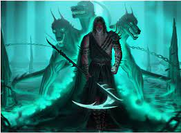

<황천의 신> 하데스
하데스는 황천의 신이면서, 동시에 황천이나 죽음 그 자체를 뜻하는 그리스어 단어이기도 하다. 이를테면 신약의 마태오 복음 16장에서는, 예수가 "하데스의 권세도 교회를 이기지 못한다"라며 베드로에게 말하는데, 여기서의 하데스는 황천이나 죽음 등으로 번역된다.원전에서나 후대의 창작물에서나 똑같이 흑발에 수염을 길게 기른, 위엄있는 마왕 같은 이미지로 묘사된다. 간혹 음침한 타입의 미소년으로 묘사되는 경우도 있다. 간혹 제우스나 포세이돈한테 털리곤 한다.
